Simplex method
1947Solves linear programs by stepping from corner to corner of the allowed region.
Can an AI agent take on a real client’s optimization project and deliver a working solution, without an expert first turning it into a math problem?
The 31 tasks come from paid optimization projects in 10 industries, worth USD 3.68 million in total. Each agent gets the client’s original brief and data, can ask a simulated client about anything left unclear, and has to hand in a plan that can actually be carried out. We then check the plan against every client rule and compare it with the expert solution the client accepted.
Agents start from what the client actually sent, and are judged on what they hand back: does the plan work, and how does it compare with an expert’s?
Solves linear programs by stepping from corner to corner of the allowed region.
Finds the best one-to-one assignment, such as workers to jobs.
Finds how much a network can carry; the narrowest bottleneck sets the limit.
Breaks a chain of decisions into stages and solves one stage at a time.
Keeps adding constraints that rule out fractional answers to whole-number problems.
Splits the problem into branches and skips those that cannot beat the best answer so far.
Splits a large model into blocks and combines the solutions of the blocks.
Adds new candidate patterns only when they help; a classic for cutting rolls and sheets.
Fixes the hardest decisions first, then lets the rest of the problem send back corrections.
Heads for the best answer through the inside of the allowed region, not along its edges.
The cheapest mix of foods that meets nutrition needs; the ancestor of blending models.
When stock falls to s, order enough to bring it back up to S.
Balances expected return against risk.
The best job order when every job passes through the same two machines.
Decide now, then adjust once the uncertain outcome is known.
Rules that must hold with at least a given probability.
Plans delivery routes from a depot without overloading any vehicle.
Repeatedly merges the two routes whose merger saves the most distance.
Finds plans that stay valid however the uncertain inputs turn out, within a set range.
Sometimes accepts a worse move, less and less often, to avoid getting stuck.
Tries nearby solutions and bans recent moves so the search does not go in circles.
Keeps the average loss in the worst cases under control.
A real project might need any of these methods. Picking one is up to the agent: the simulated client answers business questions, never modeling ones.
Each task keeps the client’s original requirements, data and output format. Only names and other identifying details were removed. Click a diagram to open its task.
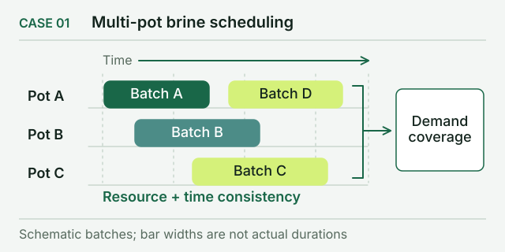
TASK 02 One-day food production in batches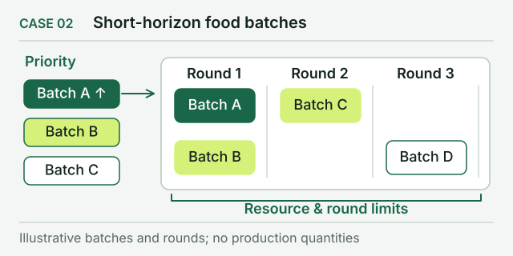
TASK 03 Repeated batches of one product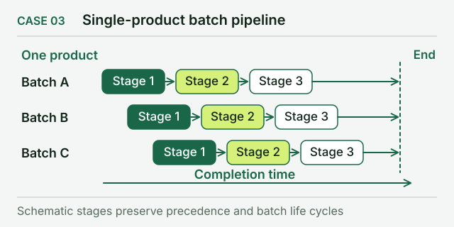
TASK 04 Five food products over a longer period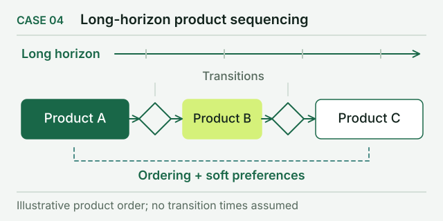
TASK 05 Batches linked by shared braising liquid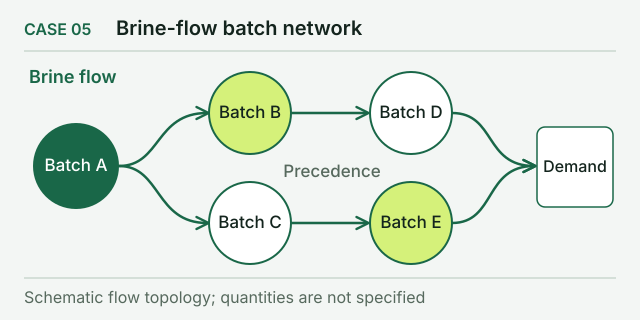
TASK 06 40-day chip burn-in schedule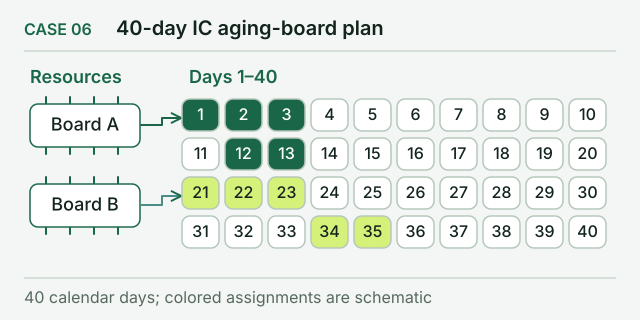
TASK 07 Daily chip burn-in schedule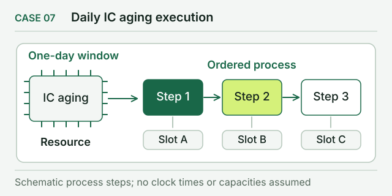
TASK 08 Salt drying and packaging schedule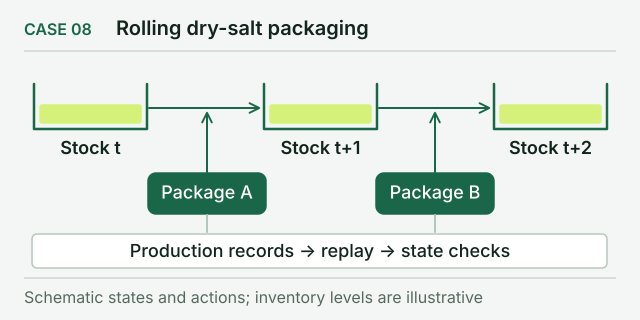
TASK 09 Cutting large rolls to fill orders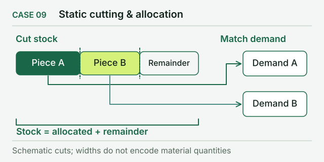
TASK 10 Fixed-ratio coal blending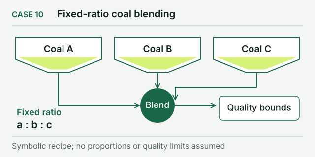
TASK 11 Copper-concentrate blending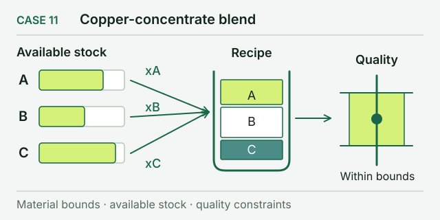
TASK 12 Grouping alloy blocks into smelting batches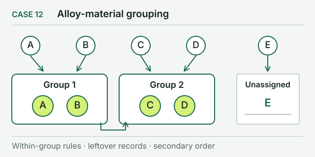
TASK 13 Inventory policy for an existing network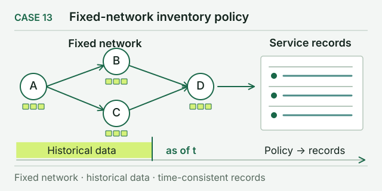
TASK 14 Four-tier supply network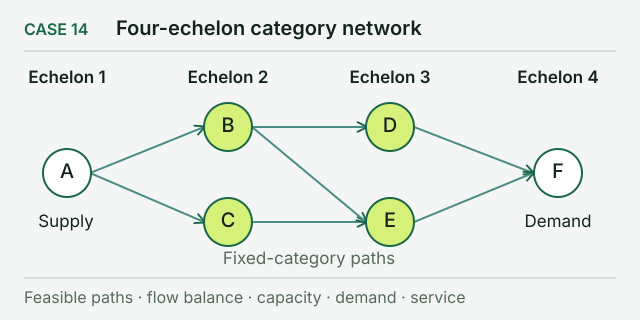
TASK 15 Supply network with direct shipping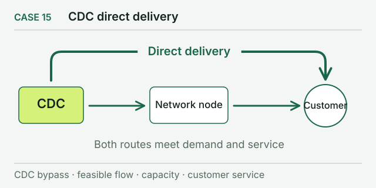
TASK 16 Supply network with shared central storage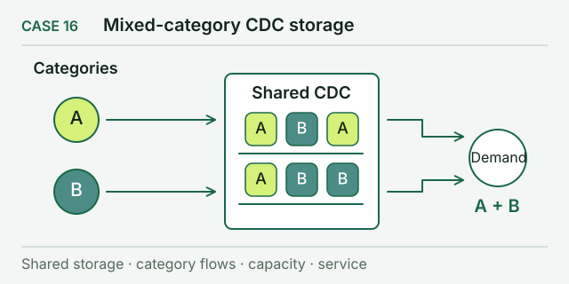
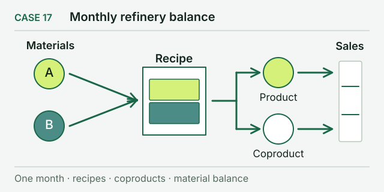
TASK 18 Order sequencing on seven plastics lines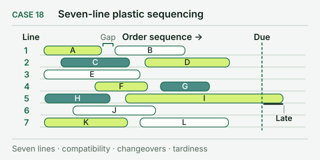
TASK 19 Picking waves for a warehouse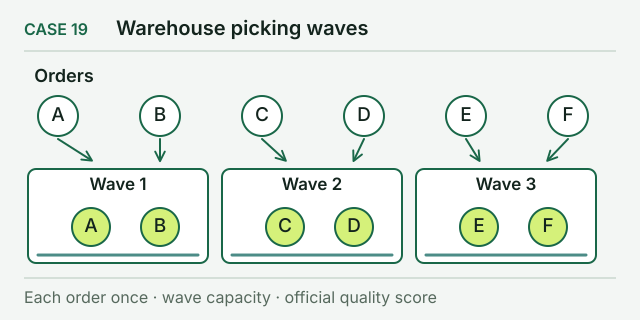
TASK 20 Long-only index-enhancement strategy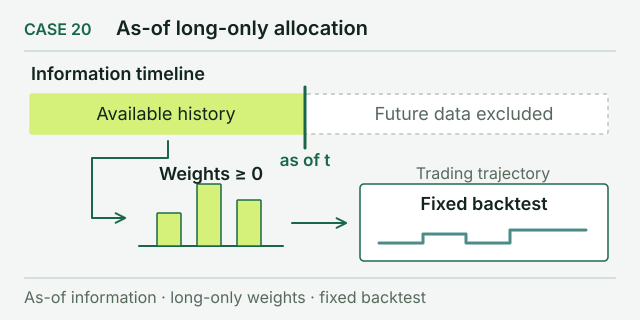
TASK 21 Market-neutral long–short strategy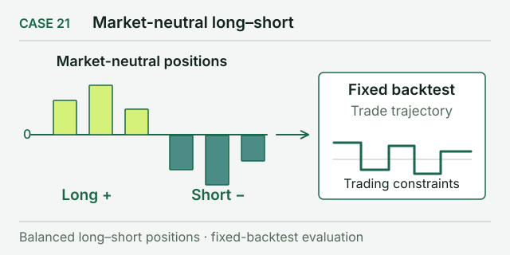
TASK 22 Stock portfolio hedged with index futures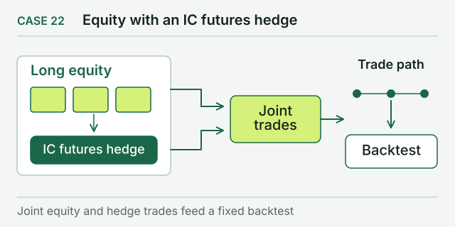
TASK 23 Three days of grocery delivery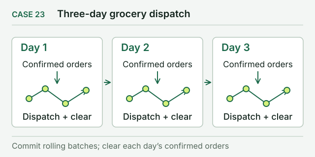
TASK 24 Hour-by-hour bike rebalancing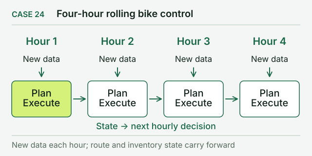
TASK 25 One-hour bike rebalancing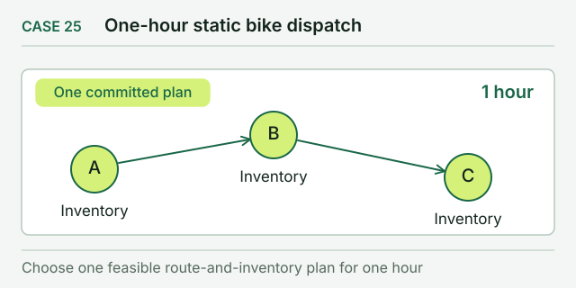
TASK 26 Bike rebalancing averaged over scenarios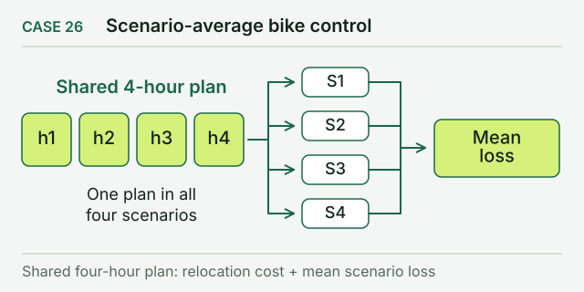
TASK 27 Bike rebalancing: decide now, adjust later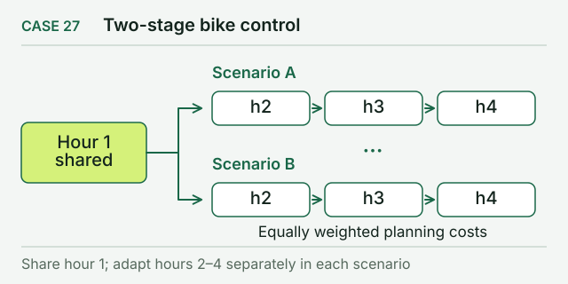
TASK 28 Bike rebalancing: protect key stations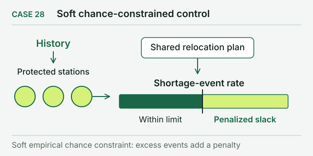
TASK 29 Bike rebalancing: limit the worst losses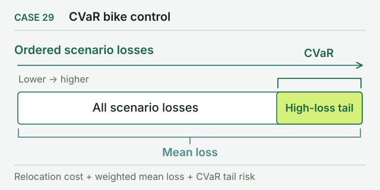
TASK 30 Bike rebalancing when the odds are uncertain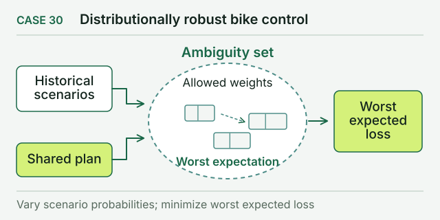
TASK 31 Bike rebalancing: plan for 16 bad cases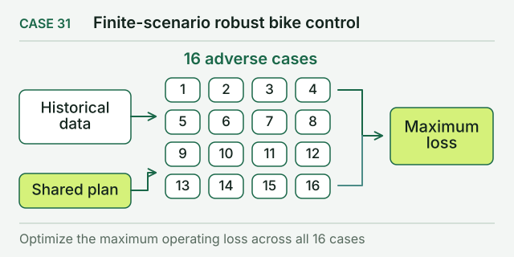
The task files use 14 industry tags; the paper groups them into 10 industries.
Each column shows a shortcoming (top) and what OR-License does about it (bottom).
Most come from textbooks, are generated by a program, or have been rewritten.
Far from what clients actually need
31 tasks in 10 industries. Original requirements and data; only identifying details removed.
Nothing is missing, so spotting a gap and asking about it is never tested.
Who finds the missing facts?
Solver found a shortage. Overtime OK?
Overtime is allowed up to 2 hours/day.
The simulated client, ORSim, can be asked at every stage.
The benchmark authors write the reference answers and check them only internally.
Would a client accept it?
The expert solution from the original project, judged by the same rules.
First check that it works, then compare how good it is.
Agents get the client’s requirements, data and output format as they were, with only identifying details removed.
While modeling, solving and checking, the agent can ask the simulated client for facts only the client knows.
Hidden checks test the plan against the client’s rules, then compare it with the expert solution the client accepted.
Even the top model scores below the expert solutions that clients accepted.
Experts went through the agents’ work step by step. Here are three takeaways.
When their plans work, several models match or even beat the experts. But every model also hands in plans that break a rule, and those score zero.
When a run fails or a result looks off, the fix is to guess why, test the guess, read the result and change the model. Models went all the way only 24% to 45% of the time.
Agents rarely come back with questions later on, even though for some models the later questions were more likely to fix a real problem.
ORSim plays the client. It knows the facts of the business, but it never does the optimization work for the agent.
Help grow OR-License by contributing a real optimization task.
@misc{wang2026orlicense,
title = {OR-License: Evaluating LLM Agents as Real-World Operations Research Practitioners},
author = {Peisong Wang and Feixue Liu and Yize Meng and Bowen Liu and Ruoyu Chen and Gaoyang Dai and Xing He and Aiqian Li and Fengchi Yuan and Aochuan Chen and Chenyi Zi and Yuhan Li and Hongchuan Zeng and Yimo Yan and Nuo Chen and Jie Fu and Zuo-Jun Max Shen and Yong-Hong KUO and Jia Li},
year = {2026},
eprint = {2610.24087},
archivePrefix = {arXiv},
primaryClass = {cs.CL},
url = {https://arxiv.org/abs/2610.24087}
}